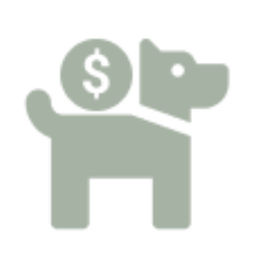
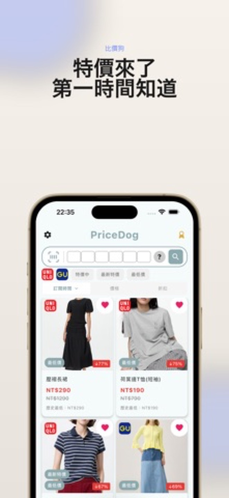
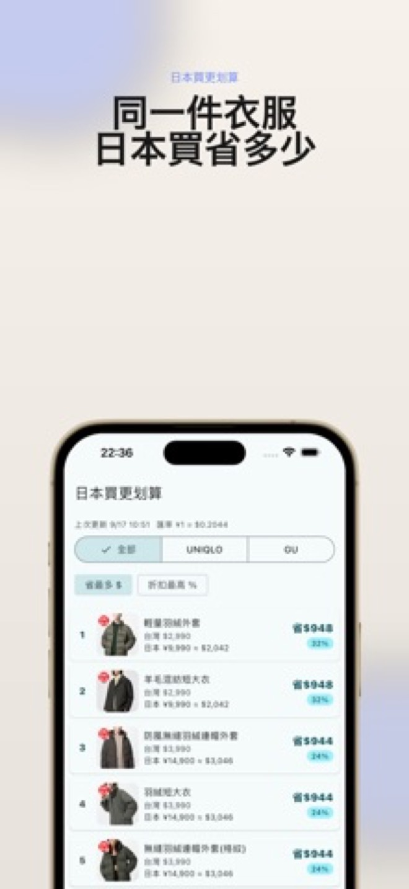
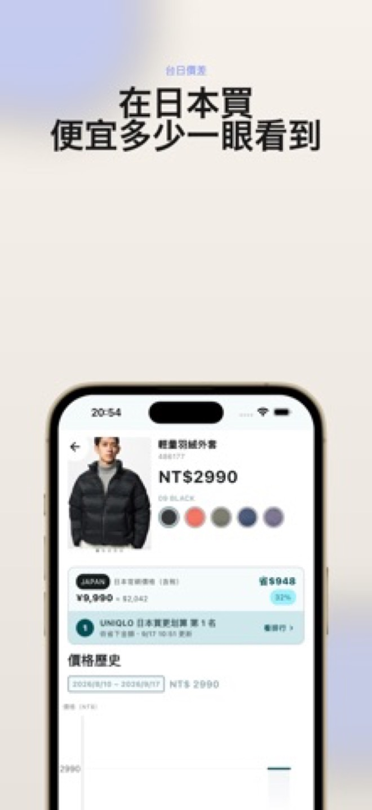

PriceDog
Know when the UNIQLO or GU item you want goes on sale in Taiwan, and whether that price is really a good one, without checking the official site every day.
- Find an item by its 6-digit tag code or barcode and track only the colors and sizes you want.
- Get a push notification once a style you follow goes on sale, instead of checking prices yourself.
- Judge a price with the NT$ price history, historical-low labels and the Japan price side by side.
View on the App Store Get it on Google Play
How to use PriceDogWhy PriceDog exists



PriceDog tracks UNIQLO and GU prices in Taiwan. Type the 6-digit code on the tag or scan the barcode, add the item to your tracking list, and PriceDog sends a push notification when items you follow go on sale.
You can choose only the colors and sizes you want, so you are notified only when a style you picked goes on sale. The price history chart shows whether today's price is a real low or the usual price.
In Japan, scan the tags at UNIQLO or GU stores to see the Taiwan price and the difference. Every item you scan goes into your Haul, which totals how much the trip saved against Taiwan prices.
Who it's for
- UNIQLO and GU shoppers in Taiwan who wait for a sale before buying
- Shoppers who want to know whether today's sale price is a real deal or the usual price
- Wanting one specific color or size and only caring when that style goes on sale
- Standing in a UNIQLO or GU store in Japan and wondering whether the item is cheaper than in Taiwan
What you can do
- Product code search — Type the 6-digit code printed on the tag to find the product right away.
- Barcode scan — Scan the tag barcode to track an item without typing. Works on Taiwan and Japan store tags.
- Track the styles you want — Pick only the colors and sizes you want; you are notified only when one of them goes on sale.
- On-sale notifications — Get a push notification when items you follow go on sale.
- Price history chart — See the price trend in NT$ and judge whether now is a good time to buy.
Free and paid
PriceDog is free to download and use, with ads. PriceDog Premium is an auto-renewing subscription with monthly (NT$30) and yearly (NT$300) plans and no free trial: no ads anywhere in the app, and adding products without watching ads. It auto-renews unless turned off at least 24 hours before the end of the current period; manage or cancel it anytime in your App Store account settings.
Privacy
Guests can browse without an account; tracking a product requires signing in with Google or Apple. Your account, tracking list and notification settings are stored on the PriceDog server, and your haul is stored on your device. The free version shows ads; PriceDog does not sell personal information. Camera access is used only for barcode scanning. You can delete your account in Settings. Full policy: https://price-dog.com/privacy
FAQ
- How do I start tracking an item?
- When will I get a notification?
- Does it tell me when the next sale starts?
Developer
This site is run by the developer of this app. apps.kennily.app